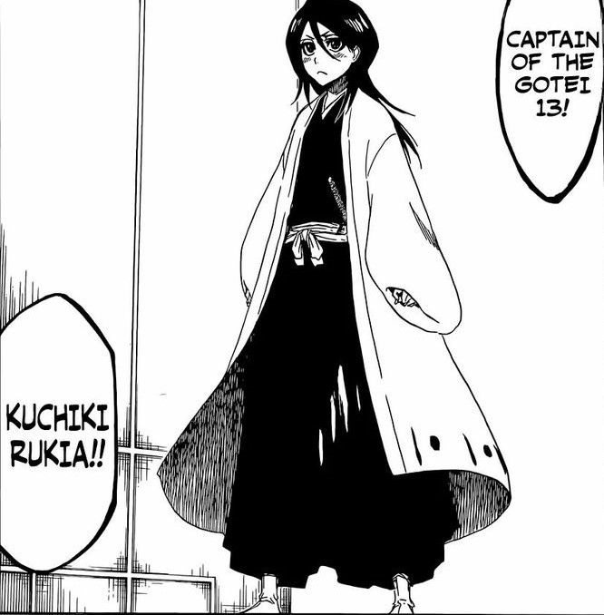
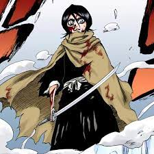
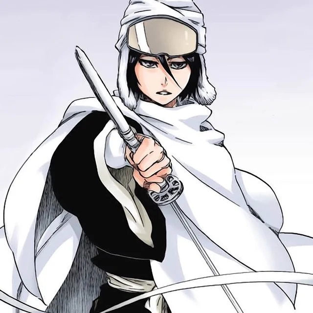
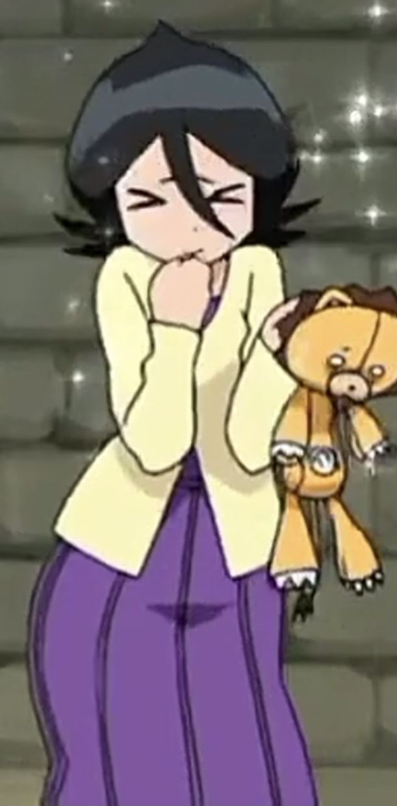
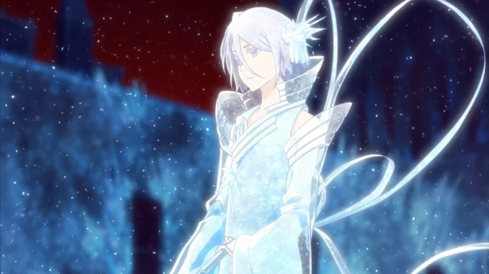
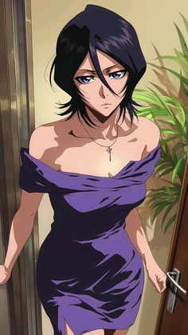
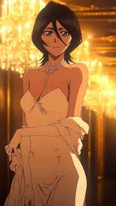
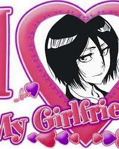
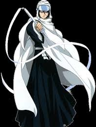

She's around 140-145based on manga. But whether her zampaktou or her own strength, she's definetly someone to be feared (and also by end of the manga she becomes the 13th Gotei captain)
Bro, half of Ichigo’s character development is just Rukia flaming him until he levels up. If your waifu can’t bully you into being a better person, is she even waifu?
Unlike many anime girls who just scream “Kyaa!” and wait for rescue, Rukia actually does stuff. She takes hits, throws hands, and even sacrifices herself for others, I think Even if you were standing at the edge of death, your perfect waifu's dont move single muscle💀. Peak partner energy.
She literally risked execution to protect her human bestie. That’s not just waifu material—that’s ride or die wife energy.
Snow powers? Check. Elegant swordplay? Check. The kind of character design that makes you say “okay, Kubo cooked fr”? Double check.
Rukia is literally the cutest tiny snow queen ever who can murder your entire squad while sipping tea and roasting you harder than your own mom, and if she smiles at you once you’re officially hers forever, like bro, she’s literally peak perfection wrapped in a tiny badass package and nobody can argue with that.
   